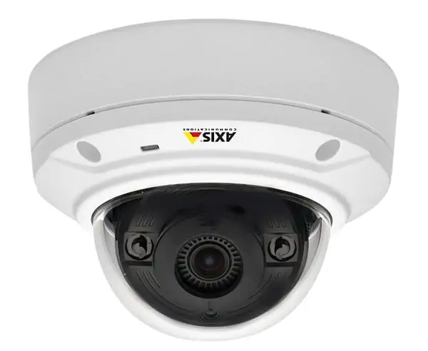
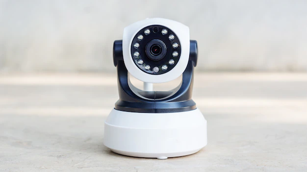
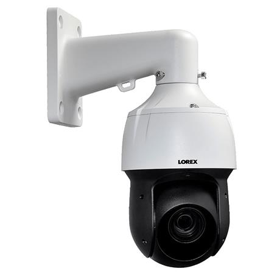
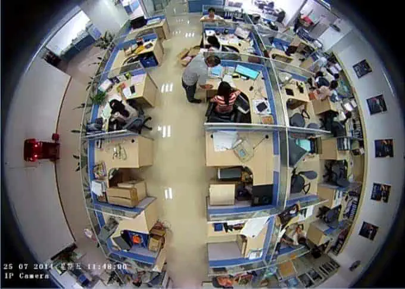
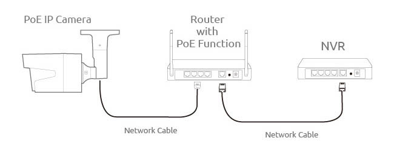

CCTV- Closed Circuit Television.
Transmits video footage over a single channel essentially creating a closed circuit.They are used for security monitoring and surveillance.
Basic components of a CCTV system are:
*Security Cameras
*Cabling / Wiring
*Network Video Record Recorder (NVR)
*Storage (Hard Drives)
Also known as network cameras and use ethernet cables.
They provide better image quality and are compatible with many features.
(NVR)Network Video Recorder allows you to record and store clips on a hard drive, snap images, and transmit them to your computer or remote device for live and recorded viewing.
They require more cabling than ip cameras and use coaxial cables which offers reliability.
Has an external recoder known as a Digita Video Recorder(DVR)that converts analog signals to digital format for local recording and remote access.
Types of cctv cameras:
.Bullet Cameras
.Dome Cameras

.Turret Cameras

.PTZ (Pan Tilt Zoom)

.Cameras Fisheye

An IP address is an address having information about how to reach a specific host, especially outside the LAN. An IP address is a 32-bit unique address.
Generally, there are two notations in which the IP address is written: dotted decimal notation and hexadecimal notation.
The 32-bit IP address is divided into five sub-classes.
Class A- are assigned to the networks that contain a large number of hosts.
Class B- is assigned to networks that range from medium to large-sized networks.
Class C- assigned to small-sized networks.
Class D- is reserved for multi-casting.
Class E- reserved for experimental and research purposes
On this project we used:
1.2MP Ip cameras(Dome and Bullet) Hik-vision brand
2.a 4 channel NVR
3.LAN cables
4.RJ45 connector
5.Display(monitor) and a smartphone(for live streaming from another location)
The camera is connected to the NVR using network cables and in turn the camera recieves power and transmits data.
